Complete UI & Profile Guide
This page walks through every WaterWall screen in SRP VPN Connect, in the order you meet them: the home screen, the profile editor, the WaterWall configuration screen and the options. The screens are the same on iPhone, iPad and Android; where Android does something else, the text says so.
Every screen title, label, default value and message below was read from the app's source code at commit e44cf11d, TestFlight build 41, the code used for our tests. Labels are quoted exactly as the app shows them.
The screenshots were taken from that code on our test iPhone 12 on 3 November 2026, each next to the same screen of the Android app at commit 0fc837e3 on the Android emulator. The profiles in them hold example values (server.example.com, a dummy UUID) instead of real ones, and no ping results are shown because none were measured for these example profiles.
Words used on this page
- Profile
- One saved connection in the app: a server, a port, a configuration and your secrets.
- Configuration (or chain)
- The layers your traffic passes through on the way to the server, for example VLESS inside TLS. The server must run the matching chain on the same port.
- Layer
- One step of the chain, such as the application protocol (VLESS) or the outer transport (TLS). The app calls each layer a node in the advanced settings.
Home screen
The home screen shows the title SRP VPN Connect, the connection status, a large power button and the list of your profiles.
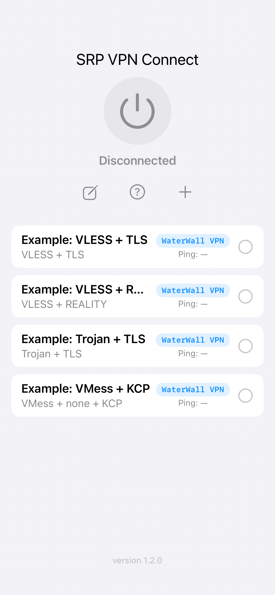
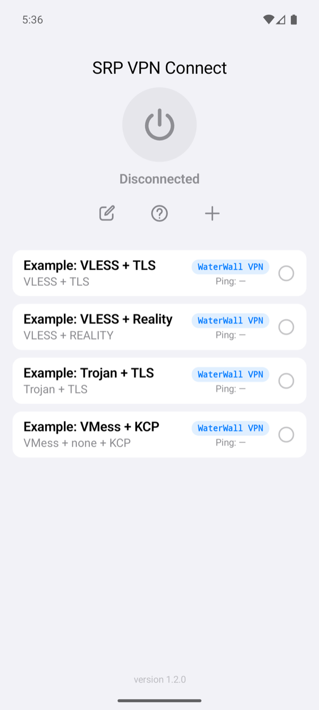
| Control | What it does |
|---|---|
| Power button | Connects the selected profile. While connecting or connected, it disconnects. The status line reads Disconnected, Connecting… or Connected. |
| Status text | Tap it to open the app's log, the first place to look when a connection fails. On iPhone, TestFlight and App Store builds keep no log of a WaterWall connection; the Android app does. |
| + (plus) | Adds a new profile. New profiles start as WaterWall. |
| Pencil (edit) | Edits the selected profile. Disconnect first: while connected, the app shows Disconnect the VPN before editing this profile. With no profile selected it shows Select a profile first (or add one with +). |
| Question mark | Opens the app's website. |
| Tap a profile | Selects it for the power button. |
| Swipe a profile to the right | Shows a blue Ping button that measures that profile. |
| Swipe a profile to the left | Shows Delete. This works only while disconnected. |
| Pull the list down | Pings every profile. The list header reads Pull to ping every profile, then Pinged X of Y while it runs. |
What each profile row shows
- Title: the profile's Description, or the server name when Description is empty.
- Subtitle: a summary of the WaterWall configuration, for example
VLESS + TLS,VLESS + REALITY,Raw IPv4,WireGuardorDirect (diagnostics). - Badge:
WaterWall VPN. - Ping: the last measured delay, or
Ping: —when there is none. The last results are kept when you close the app.
How ping is measured
| Profile | Method | Possible results |
|---|---|---|
| Not connected | The time of a TCP handshake to the server, without the DNS lookup time. Up to 16 profiles are tested at once, each with a 2.5 second limit. While another VPN is up, the test uses the Wi-Fi or cellular connection directly. On Android this holds for the app's own VPN, which the app stays outside of. | TCP: N ms, TCP: Timeout, TCP: Failed, Testing… |
| Connected, iPhone and iPad | An HTTPS request through the VPN to https://gstatic.com/generate_204, then https://connectivitycheck.gstatic.com/generate_204 if the first fails. Only the answer 204 counts. It runs by itself after connecting. | Ping: N ms, Timeout, Failed |
| Connected, Android | An HTTP request through the tunnel to port 80 of the address the start-up check uses, 1.1.1.1, because the app stays outside its own tunnel. Any HTTP answer counts, and the limit is 15 seconds. It runs by itself after connecting. Without a TCP path through the chain, such as a chain that carries only UDP, it reads Failed. | Ping: N ms, Timeout, Failed |
Results are green below 200 ms, orange below 500 ms and red at 500 ms or more, or on failure.
Choosing WaterWall
The Protocol screen lists every protocol in the app, the same nine on iPhone and Android. WaterWall is first: WaterWall VPN, with the subtitle VLESS, VMess, Trojan, BGP4 and packet tunnels.
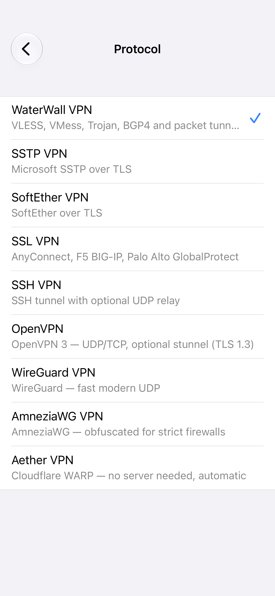
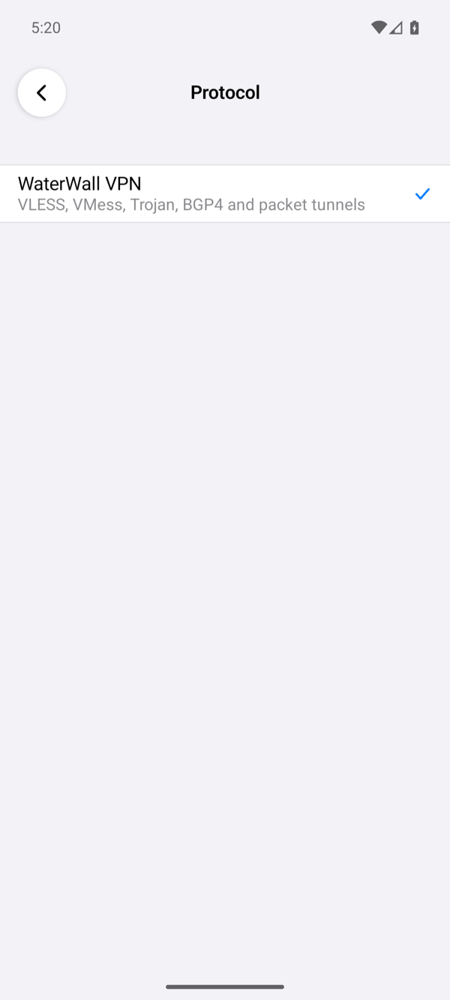
The profile editor
The editor is titled Add Profile or Edit Profile, with a ✕ (Cancel) button and Save at the top. For WaterWall it has a top section, SERVER, AUTHENTICATION and OPTIONS. The proxy section that other protocols have is hidden for WaterWall.
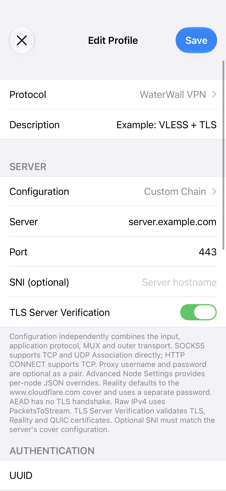
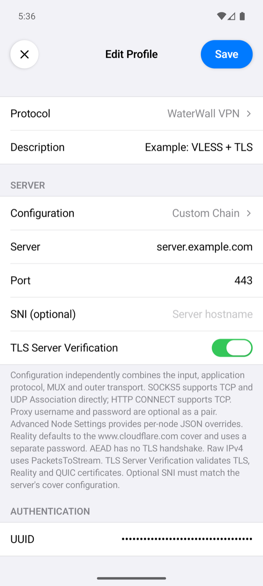
Top section
| Row | What to enter |
|---|---|
| Protocol | Shows WaterWall VPN. Tap to choose another protocol (see the warning above). |
| Description | Optional. A name for the profile in the home list. |
SERVER
| Row | What to enter | Shown when |
|---|---|---|
| Configuration | Shows Custom Chain, WireGuard or Direct (diagnostics). Tap to open the WaterWall configuration screen. | Always |
| Server | Required. Your server's domain name or IP address, for example <SERVER_HOST>. | Always |
| Port | The port the server's matching chain listens on. Empty means 443. | Always |
| SNI (optional) | The server name sent in the TLS handshake, and the Host of the HTTP layer. Empty means the Server field, except for Reality, where it means www.cloudflare.com. While the row is hidden, the app does not use it. | Outer is TLS, Reality or QUIC |
| TLS Server Verification | On by default. When on, the app checks the server's certificate and refuses a certificate that is not valid for the SNI. | Outer is TLS, Reality or QUIC |
In WireGuard mode this section instead has Import Config (.conf) and Manual Configuration; see WireGuard mode.
www.cloudflare.com, the cover our server uses. If your server's cover is another site, type that site's name.
AUTHENTICATION
This section shows only the secrets the chosen configuration needs. It disappears in WireGuard and Direct modes, and when the chain needs no secret.
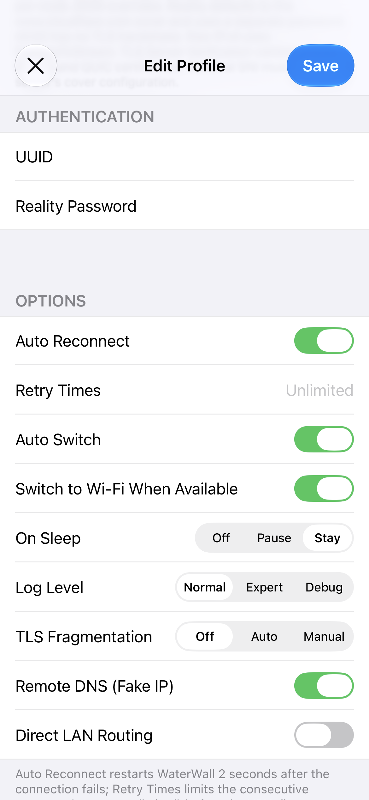
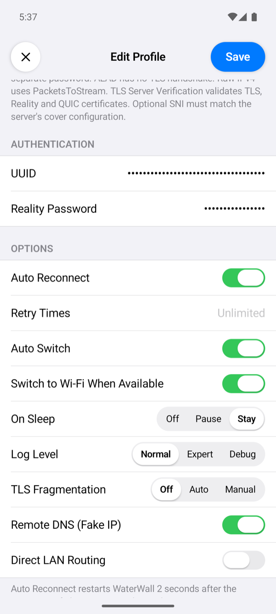
| Row | Shown for | What to enter |
|---|---|---|
| UUID | VLESS | Required. The client UUID from the server's VLESS settings, written with dashes or as 32 hexadecimal characters. |
| UUID / ID | VMess | Required. A UUID, or a short ID of 1 to 30 bytes. |
| Password | Trojan | Required. The Trojan password from the server. |
| Username and Password | SOCKS5, HTTP CONNECT | Optional, but both or neither. |
| Reality Password | Outer Reality | Required. 1 to 32 bytes, the same as the server's Reality password. It is separate from the UUID or password above. |
| AEAD Password | Outer AEAD | Required. The same as the server's password. |
Saving
Tapping Save first removes spaces from the start and end of Server, Port, SNI and the VLESS or VMess UUID. Then it checks the profile and shows the first problem in an alert titled Invalid WaterWall Configuration:
| Message | What to fix |
|---|---|
| Enter the WaterWall server. | Server is empty. |
| Enter a WaterWall port between 1 and 65535. | Port is not a valid number. |
| Enter a valid VLESS UUID as dashed RFC4122 or 32 hexadecimal characters. | The VLESS UUID is missing or malformed. |
| Enter a VMess UUID or a short string ID of 1 to 30 UTF-8 bytes. | The VMess ID is missing or too long. |
| Enter the Trojan password. | The Trojan password is empty. |
| Proxy username and password must be supplied together, or both left empty. | SOCKS5 or HTTP CONNECT has only one of the two. |
| Proxy username and password must each contain at most 255 UTF-8 bytes. | A proxy credential is too long. |
| HTTP proxy username cannot contain a colon. | Remove the colon from the HTTP CONNECT username. |
| HTTP proxy credentials cannot contain control characters. | Remove invisible characters, such as a pasted line break. |
| Reality password must contain 1 to 32 UTF-8 bytes. | The Reality password is empty or too long. |
| Enter the AEAD password. | The AEAD password is empty. |
| Import or enter a complete, valid WireGuard configuration. | WireGuard mode has no usable configuration. |
Direct mode needs no server, so it is saved without these checks.
The WaterWall configuration screen
Tapping Configuration opens a screen titled WaterWall. It has up to four sections: CONFIGURATION, ADVANCED NODE SETTINGS, GEOIP ROUTING and DNS RESOLVER. Each change is checked at once; if a combination is not allowed, an alert explains why and the change is not made.
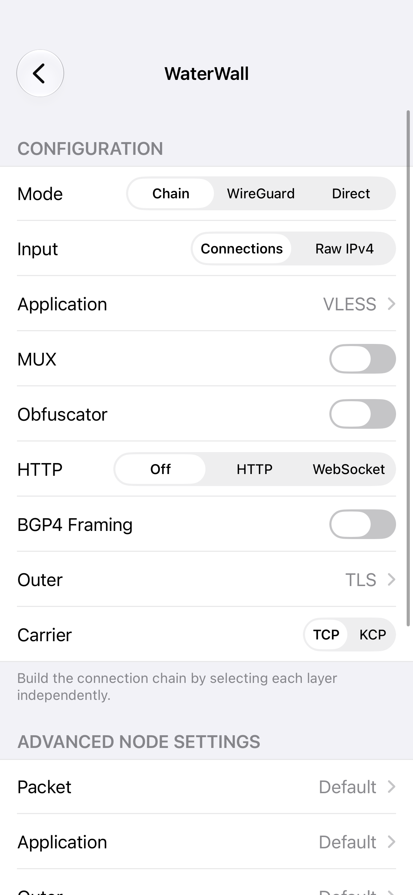
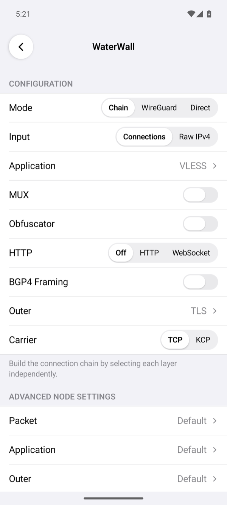
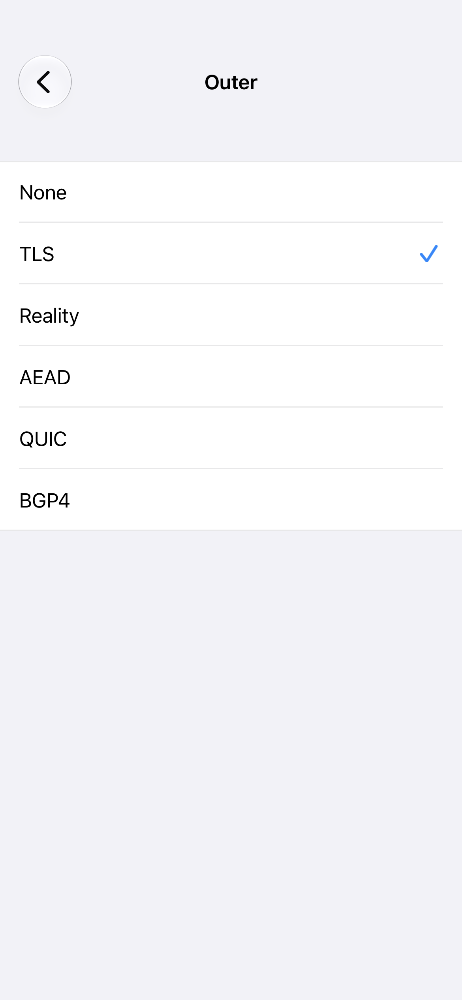
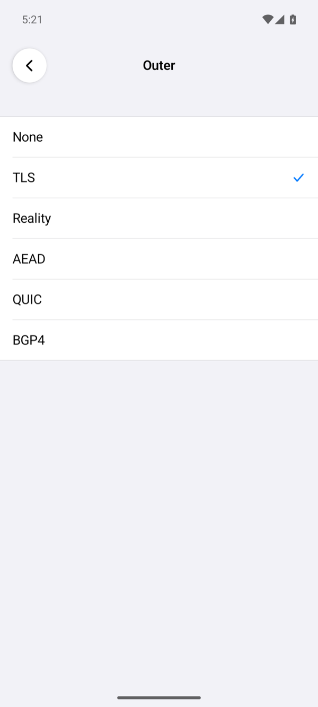
Mode
| Mode | What it does |
|---|---|
| Chain (default) | Builds a connection from the layers you choose below. This is the normal mode. |
| WireGuard | Connects to a WireGuard server; see WireGuard mode. |
| Direct | Sends traffic straight to the internet through WaterWall, with no server. It is meant for diagnostics: it shows whether the phone side of WaterWall works. |
Changing the mode clears the advanced node settings. Choosing Chain resets every layer to its default; the other modes remove the chain, GeoIP and DNS resolver settings.
The layers of a chain
In Chain mode you pick each layer separately. Traffic passes through them in the order of this table, from the phone towards the server.
| Row | Choices (default first) | What it means |
|---|---|---|
| Input | Connections, Raw IPv4 | Connections splits the phone's traffic into separate TCP and UDP connections and sends each through the chain. Raw IPv4 sends whole IP packets as one stream instead; it has no application protocol and needs a server chain built for raw packets. |
| Application | VLESS, VMess, Trojan, SOCKS5, HTTP CONNECT | The proxy protocol that tells the server where each connection goes. VLESS and VMess identify you with a UUID, Trojan with a password. VLESS and Trojan do not encrypt by themselves, so they normally run inside TLS or Reality; VMess encrypts its own data. SOCKS5 and HTTP CONNECT are standard proxy protocols. Shown for Connections input. |
| MUX | Off, on | Carries many connections inside one connection to the server, so new connections start faster. The server needs the matching MUX layer. WaterWall MUX is WaterWall's own format; it is not V2Ray's Mux.Cool or XUDP. |
| Packet Encryption | Off, on | Shown with Input Raw IPv4, except with Outer Reality or AEAD. Encrypts the TCP or UDP payload of each packet with the Packet Password; the server needs the same setting. See Packet Encryption. |
| Obfuscator | Off, on | Scrambles the bytes with a simple XOR key so they do not show obvious patterns. This is not encryption. |
| HTTP | Off, HTTP, WebSocket | Wraps the connection in HTTP requests or in a WebSocket, so it looks like web traffic. |
| HTTP Version | 1, 2 | HTTP/1.1 or HTTP/2 for the HTTP layer. Shown when HTTP is on. |
| BGP4 Framing | Off, on | Wraps the stream in frames that look like BGP, a routing protocol. It is framing only, with no encryption and no login. |
| Outer | TLS, None, Reality, AEAD, QUIC, BGP4 | The outermost layer, the one the network sees. TLS is the encryption HTTPS uses and needs a certificate on the server. Reality uses a TLS handshake that is passed to a real website, so the server needs no certificate of its own; it uses a separate password. AEAD encrypts with a shared password and has no TLS handshake. QUIC is encrypted transport over UDP. BGP4 uses BGP framing as the outer layer. None adds no outer layer. |
| QUIC Carrier | Datagram, Stream | How QUIC carries your data. Shown when Outer is QUIC. MUX and BGP4 need Stream. |
| Carrier | TCP, KCP | How the chain reaches the server. KCP carries the connection over UDP with its own retransmission, which can help on networks that lose packets. Not shown with QUIC, which always uses UDP. |
Tapping Application or Outer opens a list with the current choice ticked; tap a row to choose it and go back.
What changes when you choose
Some choices change other rows for you:
- Another Application clears the username and password and the application's advanced settings. Enter your UUID or password again afterwards. Tapping the current one changes nothing.
- SOCKS5 turns MUX, HTTP, Obfuscator and BGP4 off, sets Outer to None and Carrier to TCP, and hides every other row.
- HTTP CONNECT turns MUX and HTTP off and sets Carrier to TCP.
- Outer QUIC turns HTTP and MUX off and sets Carrier to TCP. QUIC Carrier becomes Stream for HTTP CONNECT and Datagram otherwise.
- QUIC Carrier Datagram turns MUX off.
- Turning BGP4 Framing off while Outer is BGP4 sets Outer to None.
- Raw IPv4 removes the application, MUX, GeoIP and DNS resolver settings.
Combinations that are not allowed
These are refused with the message shown:
| Combination | Message |
|---|---|
| Raw IPv4 with an application | Raw IPv4 cannot be combined with an application protocol. |
| MUX with Raw IPv4 | MUX requires an application protocol, not Raw IPv4. |
| QUIC with KCP | QUIC cannot be combined with the KCP carrier. |
| HTTP with QUIC | HTTP cannot run over QUIC. |
| MUX with QUIC Datagram | MUX over QUIC requires the stream carrier. |
| BGP4 with QUIC Datagram | BGP4 over QUIC requires the stream carrier. |
| SOCKS5 with any other layer | SOCKS5 TCP and UDP require the TCP carrier with no MUX, outer transport, HTTP or obfuscation. |
| HTTP CONNECT with MUX, HTTP or KCP | HTTP CONNECT cannot be combined with MUX, another HTTP layer or KCP. |
| HTTP CONNECT with QUIC Datagram | HTTP CONNECT over QUIC requires the stream carrier. |
Notes under the section
The text under CONFIGURATION changes with your choices. With BGP4 on, it says BGP4 is framing, not encryption. Combine it with a separate outer transport when needed; QUIC requires stream mode. With VMess it notes that VMess uses modern AEAD encryption and that WaterWall MUX is not VMess Mux.Cool or XUDP. With the Obfuscator on it notes that XOR is obfuscation, not encryption.
ADVANCED NODE SETTINGS
Each layer in use has a row here: Packet, Application, MUX, Obfuscator, HTTP, Outer and KCP. The value shows Default, 1 setting or N settings. These settings are optional; leave them empty to use the app's defaults. The section note says Optional per-node JSON objects. Leave them empty to use WaterWall defaults.
Tapping a row opens a JSON editor for that layer:
- The text is the layer's settings as a JSON object. An empty layer starts as
{ }with an empty line inside. - The line under the text says No settings: WaterWall defaults, Valid JSON, or, in red, where the error is, for example Line 3, column 7: ….
- Format lays out valid JSON neatly. It is available only while the JSON is valid.
- Return keeps the indentation and indents one more step after
{or[. - Automatic corrections, capitals and curly quotes are off, so what you type stays valid JSON.
- The ✓ (Done) button saves the settings. If they are not valid, an alert titled Invalid Node Settings explains why. Going back without Done discards your edits.
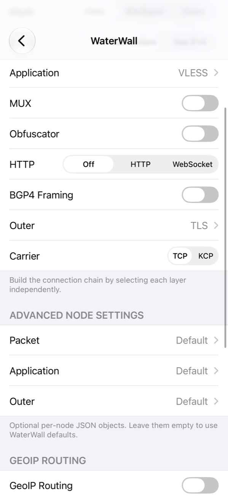
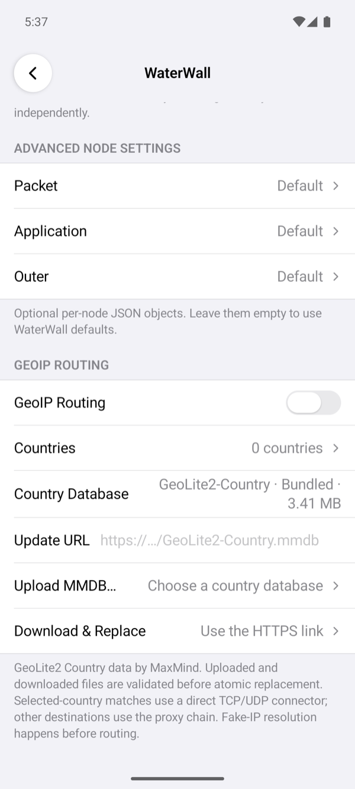
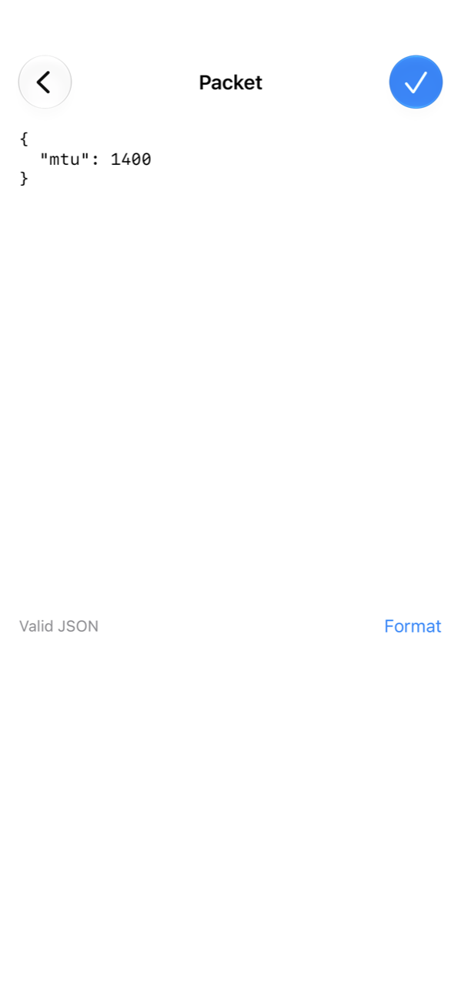
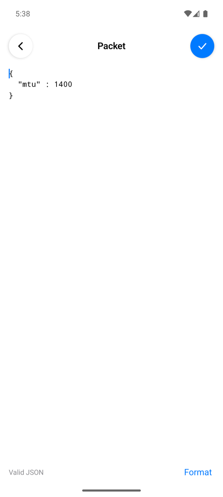
Which keys each layer accepts, and their limits, is in the Configuration Reference. A few values are always set by the app and override yours: the SNI, the certificate check, the passwords and the QUIC carrier mode.
GEOIP ROUTING
Shown in Chain mode with Connections input. GeoIP routing sends traffic to chosen countries directly, without the server, and everything else through the server.
| Row | What it does |
|---|---|
| GeoIP Routing | Turns country routing on. The first time, it installs the country database that comes with the app. If no country is chosen yet, it selects Iran (IR). |
| Countries | Opens GeoIP Countries: a searchable list (Country or ISO code) where you tick the countries that go direct. Ticking a country also turns routing on and installs the database if needed. |
| Country Database | Shows the database type, where it came from (Bundled or Updated) and its size, or No valid database. |
| Update URL | An HTTPS link to a GeoIP2 or GeoLite2 Country database (.mmdb). It is checked and saved when you finish typing. |
| Upload MMDB… | Picks a database file from the Files app, or on Android from the system's file picker. |
| Download & Replace | Downloads the database from the Update URL. |
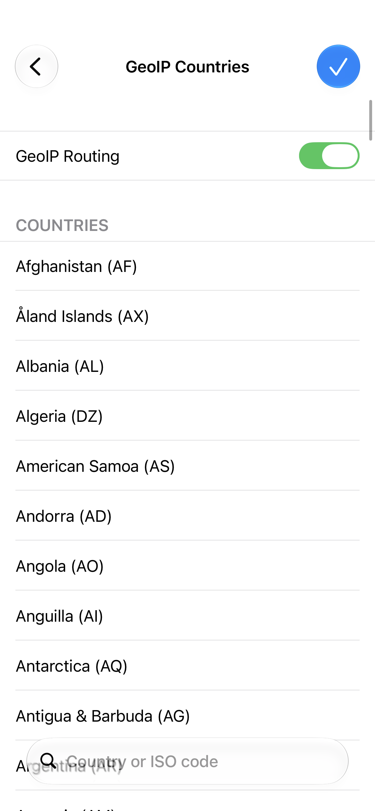
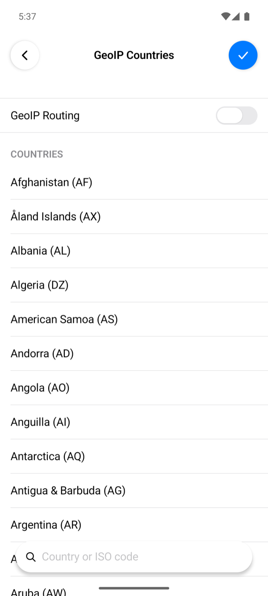
A new database is checked before it replaces the old one; if the check fails, the old one stays. Files must be MaxMind Country databases no larger than 128 MB. After a successful update the app says Reconnect WaterWall to use the new file. Country data is GeoLite2 by MaxMind.
DNS RESOLVER
Shown in Chain mode with Connections input, under GeoIP Routing. It decides who looks up the names of the sites the phone opens: the server, as before, or WaterWall on the phone before routing, so that GeoIP routing sees real addresses and the server gets an address instead of a name. It needs Remote DNS (Fake IP), which is on by default: with it off, the phone looks names up itself, and WaterWall gets only addresses. The note under the section says what the chosen Resolver does.
| Row | What it does |
|---|---|
| Resolver | Opens a list: Off, the default, leaves names to the server; GeoIP routing still looks them up on the phone, with the network's DNS. Native asks the DNS of the network the phone is on, outside the VPN. Direct asks the DNS servers below straight from the phone, outside the VPN. Through the VPN asks them through the VPN, so the server must reach them. |
| Addresses | Shown unless Resolver is Off: Default (IPv4 First), IPv4 First, IPv6 First, IPv4 Only, IPv6 Only or As the Server Returns, for a name with both kinds of address. |
| DNS Servers | Shown for Direct and Through the VPN. It starts with 1.1.1.1, 8.8.8.8. Up to 32 addresses, separated by commas or spaces; a port goes after an IPv4 address as 1.1.1.1:5353, or after an IPv6 address in brackets as [2606:4700:4700::1111]:53. The list is checked and saved when you finish typing. |
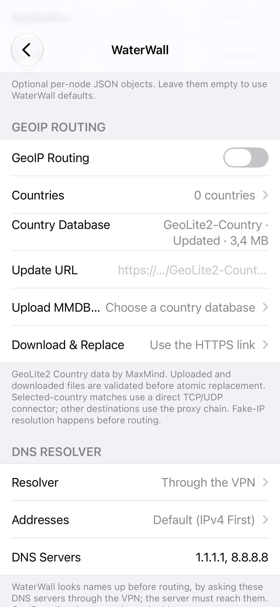
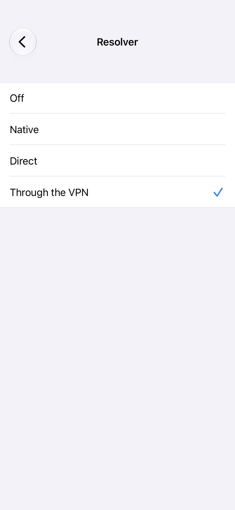
On Android the section has the same rows and the same lists.
A change that is not allowed is refused at once with one of these messages, and the saved list stays:
| Message | What to fix |
|---|---|
| <entry> is not a DNS server address: use an IP address, IPv4:port or [IPv6]:port. | A name such as dns.google, an IPv6 scope such as %en0, a leading zero, or port 0. |
| Direct and chain DNS need 1 to 32 DNS servers. | The list is empty or longer than 32. |
| Chain DNS sends UDP queries through the VPN, which HTTP CONNECT and a fixed TCP protocol cannot carry. | Through the VPN with HTTP CONNECT, or with protocol tcp or connect in the application's settings: choose Direct or Native, or another application. |
What the app puts in the chain for each Resolver is in the Configuration Reference.
WireGuard mode
In WireGuard mode the SERVER section has:
- Import Config (.conf): picks a WireGuard file from the Files app, or on Android from the system's file picker. Server and Port are filled from its
Endpointline, and WaterWall connects to thatEndpoint: changing Server or Port afterwards does not change it. A wrong file shows Import Failed with The file could not be read as UTF-8 text. or The file does not look like a WireGuard config (no [Interface]/[Peer] sections). - Manual Configuration: enter the keys yourself, as below.
- Server and Port.
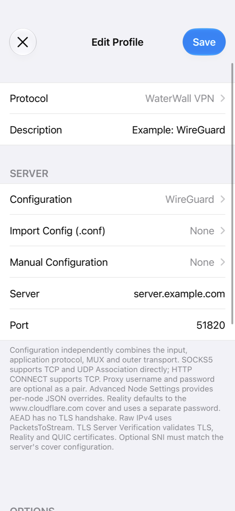
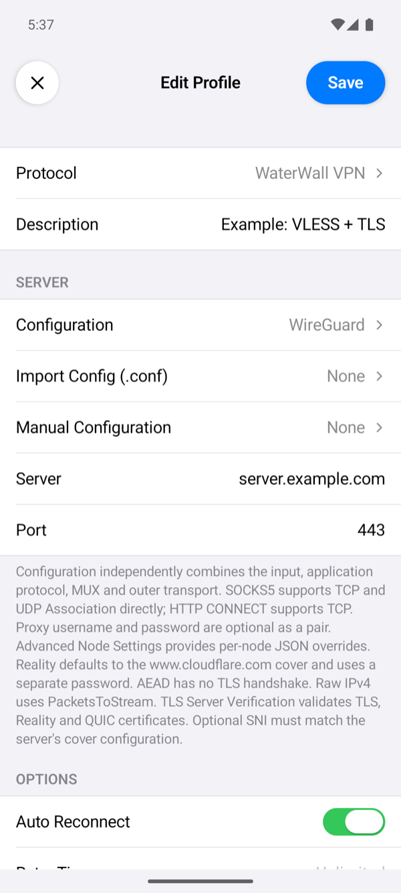
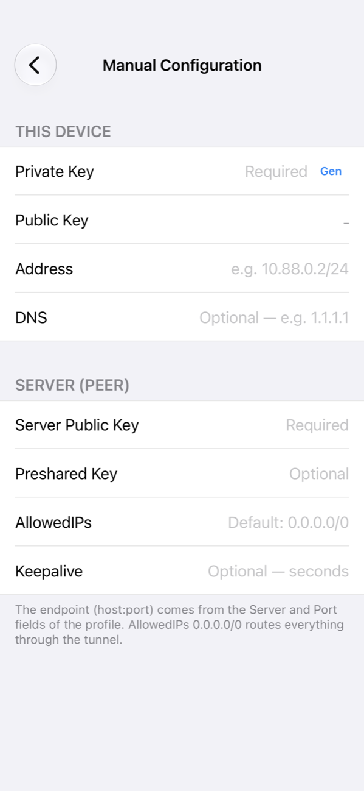
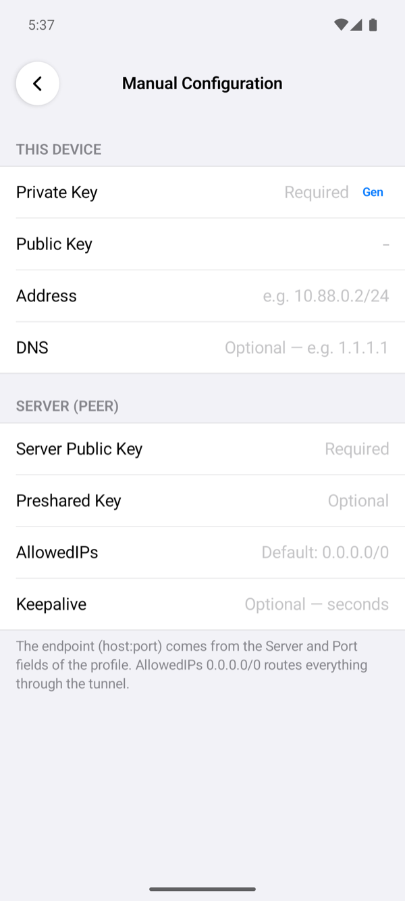
| Manual Configuration row | What to enter |
|---|---|
| Private Key | Required. Gen creates a new key pair. |
| Public Key | Shown for the private key. Tap to copy it, to add this phone to the server. |
| Address | The phone's address inside the tunnel, for example 10.88.0.2/24. |
| DNS | Optional, for example 1.1.1.1. |
| Server Public Key | Required. The server's WireGuard public key. |
| Preshared Key | Optional. |
| AllowedIPs | Which addresses go through the tunnel. Empty means 0.0.0.0/0, everything. |
| Keepalive | Optional, in seconds. |
An empty Port means 51820, the usual WireGuard port. A profile that was in Chain mode before keeps the port it had, so check it when you switch to WireGuard.
.conf are stored separately for each profile and are deleted with the profile: in the iOS Keychain, or on Android encrypted with a key that the Android Keystore holds. They belong to the profile's protocol: if you change the profile to another protocol, such as the WireGuard or AmneziaWG protocol on iPhone and iPad, it starts without them.
OPTIONS
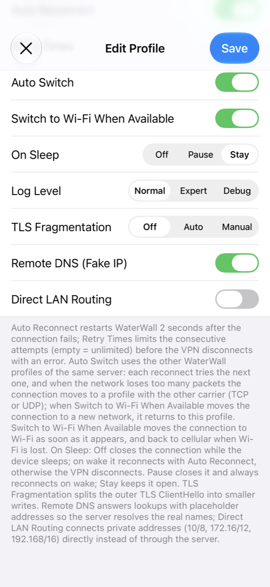
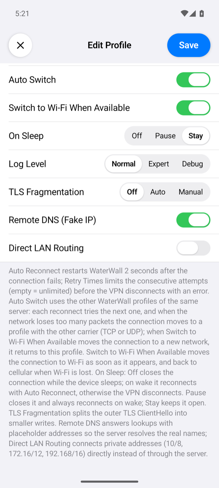
| Option | Default | What it does |
|---|---|---|
| Auto Reconnect | On | Restarts WaterWall 2 seconds after the connection fails. When off, the first failure ends the VPN. A failure is: WaterWall stopping, the start-up check failing (the app tries the server for up to 30 seconds), or no traffic passing during a 15-second health check. |
| Retry Times | Empty (unlimited) | Shown with Auto Reconnect. How many reconnects in a row before giving up with Could not reconnect after N attempts. The count restarts after a good connection, a network change or waking up. |
| Auto Switch | On | Shown in Chain mode. Uses your other WaterWall Chain profiles for the same server (up to 8, matched by the Server field) as fallbacks. Each reconnect tries the next one. When the network loses many packets, it moves to a profile with the other carrier (TCP or UDP). |
| Switch to Wi-Fi When Available | On | Restarts the connection on Wi-Fi as soon as Wi-Fi appears, and on cellular when Wi-Fi is lost. This is also what returns Auto Switch to the profile you chose. |
| On Sleep | Stay | Stay keeps the connection open while the phone sleeps. Pause closes it and always reconnects on wake. Off closes it; on wake it reconnects only with Auto Reconnect, otherwise the VPN ends with The connection was closed while the device slept. On Android, the phone sleeping means the screen going off, and waking means the screen coming on. |
| Log Level | Normal | How much the app and WaterWall write to their logs: Normal, Expert or Debug. On iPhone it matters only in Debug builds made for testing, because TestFlight and App Store builds keep no log of a WaterWall connection. |
| TLS Fragmentation | Off | Shown for Chain with Outer TLS or Reality. Splits the first TLS message (the ClientHello) into small pieces, which can get past some filters. Auto uses a 32-byte first piece and 256-byte pieces after it. Manual adds First Chunk (bytes) (hint 32) and Following Chunks (bytes) (hint 256) for your own sizes. |
| Remote DNS (Fake IP) | On | Shown for Chain with Connections input. The phone gets placeholder addresses for names, and the server looks up the real names, or WaterWall on the phone when the DNS RESOLVER is on. When off, the phone asks 1.1.1.1 and 1.0.0.1 itself, and the DNS resolver has no names to look up. |
| Direct LAN Routing | Off | Shown for Chain with Connections input. Sends private addresses (10.0.0.0/8, 172.16.0.0/12, 192.168.0.0/16) directly instead of through the server, so you can still reach devices on your local network. |
fragment setting in the Outer advanced settings replaces the app's own.
On Android
Everything above applies to Android too. The few things Android does differently, such as the Connection request and the always-on setting, are on the Android page.
What the app does not have
- No import or export of WaterWall profiles: there are no share links (such as
vless://), no QR codes and no file export. You type each profile in. The only imports are the WireGuard.conffile and the GeoIP database. - No IPv6 inside the tunnel. The WaterWall tunnel carries IPv4 only.